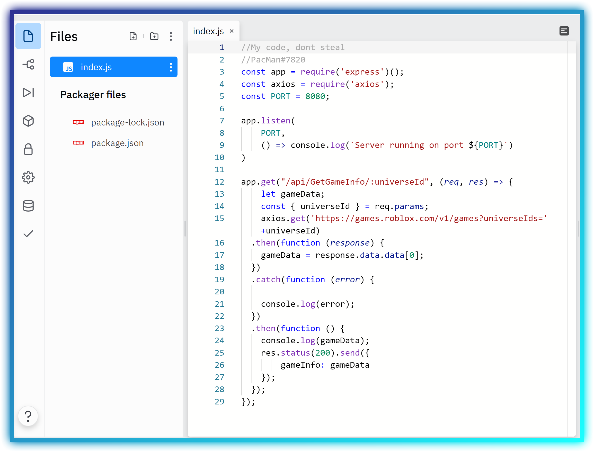

robloxpuppetapi Documentation
☰ Menu ◈View the GitHubWhat is it?
If you didn't know, ROBLOX has blocked all requests from a ROBLOX game to the ROBLOX API. This is annoying since the API can be a fun tool to use for developers. The ROBLOX API can for example get how many players are currently in your game in all servers combined. But, due to ROBLOX stopping players from accessing the API within a game, we need an API proxy.
If you are here, you want to know how to setup your own. Luckily, I have made the API for you, but you must host it. I will show you how to host your API proxy on replit and how to use it through ROBLOX.
Also, using this code means you will credit me in some way. Forking/editing my code is OK, as long as you give original credits. Don't be a skid, I'm looking at you..
Go ahead, click the link to go to the GitHub and download the API code.
View the GitHubSetting Up and Hosting
First off, after you downloaded the files, you must create an account on replit. After that, create a new repl as a Node.js project. Your project should look like this but without any code:
Then import all the files that you downloaded EXCEPT the README.md
Try running the code by pressing the run button on the right (it should spend a minute installing Express and other packages). If there are no errors in the console, and above it shows a URL, your good! (ignore the Cannot GET / message)
Now, we need to keep the API running 24/7 so that it doesnt go offline. Make sure you are running the API and copy the URL replit gives you above the console, and create an account on UptimeRobot. Create a new monitor with type HTTP(s). Change the friendly name to whatever you want and the URL to the URL that replit gave you. Dont change anything else, and now you have a 24/7 proxy API!
Keep note that this a free hosting method. If you plan on sending thousands of requests every few minutes, I suggest buying a VPS.
Using within ROBLOX
local function GetGameInfo(data)
local request = http:GetAsync("https://YOURURL/api/GetGameInfo/" .. game.GameId) -- Change the URL to yours!!
request = http:JSONDecode(request)
return request.gameInfo[data]
end
Above is an example of how to use the API proxy within ROBLOX. HTTP requests must be on for this to work. This code will make a function that can get the games data using its GameId.
print(tostring(GetGameInfo("playing"))) -- Print the current players in a game
This is an example of how to call the function.
Now that you know how to use, it lets talk about the things you can do!
Methods
| Type | URL | Description | Response Format |
|---|---|---|---|
GET |
/api/GetGameInfo/{gameId} | Returns information about a game | JSON |